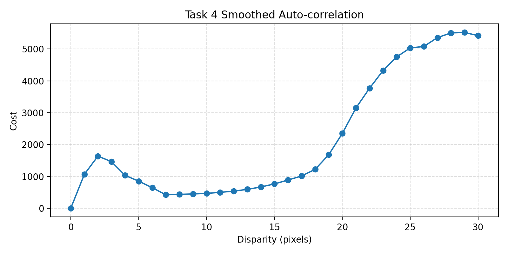
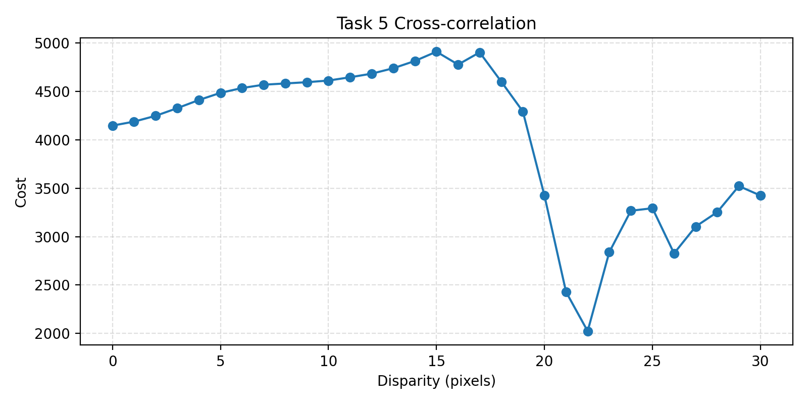
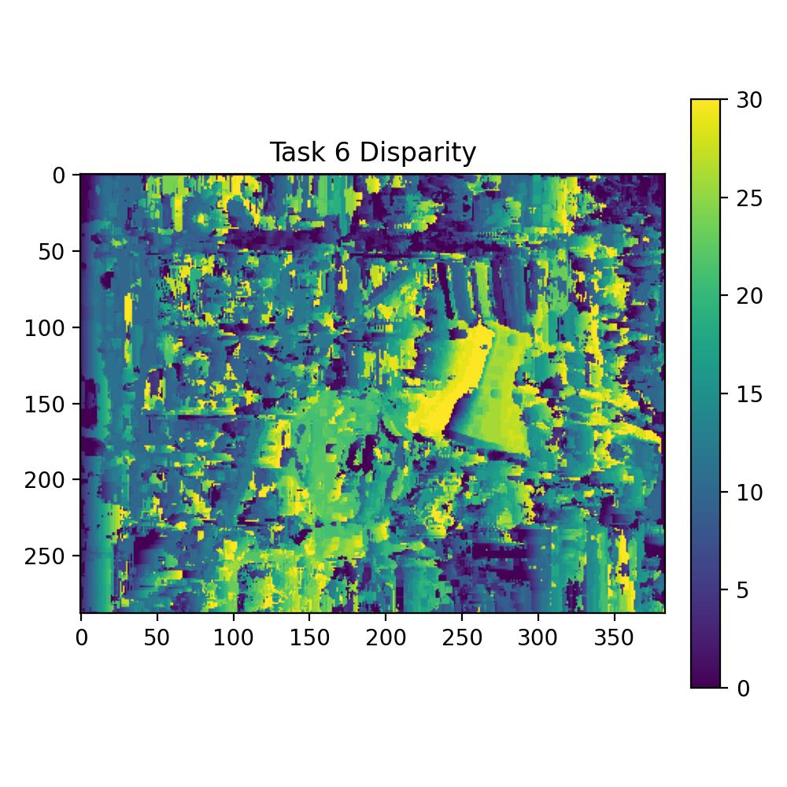
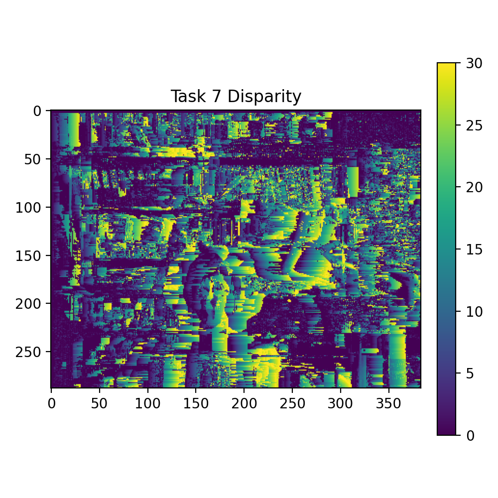
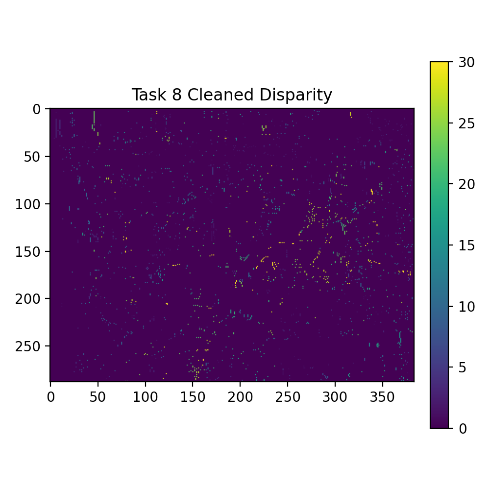

[0.0000, 1065.0000, 1637.0000, 1460.0000, 1032.0000, 850.0000, 644.0000, 422.0000, 435.0000, 448.0000, 465.0000, 499.0000, 536.0000, 592.0000, 667.0000, 763.0000, 886.0000, 1012.0000, 1222.0000, 1682.0000, 2349.0000, 3147.0000, 3766.0000, 4325.0000, 4753.0000, 5035.0000, 5081.0000, 5358.0000, 5507.0000, 5520.0000, 5422.0000]
min: 0.0000 | max: 5520.0000 | mean: 2147.7419 | std: 1925.6594

[4146.0000, 4187.0000, 4247.0000, 4326.0000, 4410.0000, 4484.0000, 4534.0000, 4568.0000, 4581.0000, 4594.0000, 4611.0000, 4645.0000, 4682.0000, 4738.0000, 4813.0000, 4909.0000, 4776.0000, 4902.0000, 4600.0000, 4292.0000, 3423.0000, 2429.0000, 2024.0000, 2839.0000, 3267.0000, 3293.0000, 2827.0000, 3104.0000, 3253.0000, 3522.0000, 3424.0000]
min: 2024.0000 | max: 4909.0000 | mean: 4014.5161 | std: 792.1510

min: 0.0000 | max: 30.0000 | mean: 13.9133 | std: 8.5747

min: 0.0000 | max: 30.0000 | mean: 8.7520 | std: 9.5939

min: 0.0000 | max: 30.0000 | mean: 0.2611 | std: 2.1967
PLY saved to D:\Desktop\EEP596-CV\homework\hw7\kermit.ply with 2271 vertices.